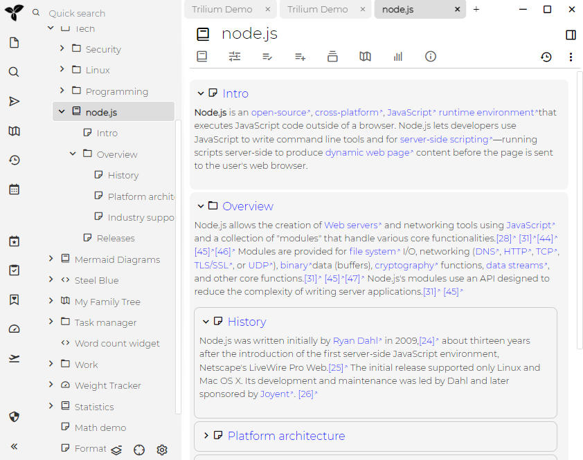

Book
A Book Note in Trilium is a special type of note designed to display the contents of its child notes sequentially, creating a linear, book-like reading experience. This format is particularly useful for viewing multiple smaller notes in a cohesive, continuous manner.

In the example above, the "node.js" note on the left panel contains several child notes. The right panel displays the content of these child notes as a single continuous document.
Features
The Book Note format compiles the contents of all child notes into one continuous view. This makes it ideal for reading extensive information broken into smaller, manageable segments.
It uses the Note List mechanism to display the child notes, allowing the use of any of the view types (grid, list, calendar).
To adjust the view type, see the dedicated Book tab in the Ribbon.